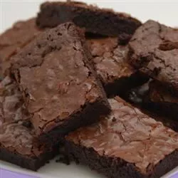

Brownies

Description
These cake-like brownies are the most delicious, fudgy treats I have ever eaten. They are super quick and easy to make. For best results, use Dutch-processed cocoa. For less cake-like brownies, use all purpose flour instead of self-rising.
Ingredients
- 1 cup white sugar
- 1/2 cup butter, melted
- 2 large eggs
- 1/2 cup self-rising flour
- 1/3 cup unsweetened cocoa powder
- 1/2 teaspoon salt
- 1 teaspoon vanilla extract
- 1/2 cup chopped walnuts (Optional)
Directions
- Preheat the oven to 350 F. Grease and flour an 8x8- or 9x9-inch baking pan.
- Beat together sugar and butter in a medium bowl. Add eggs and mix well. Combine flour, cocoa, and salt; stir into sugar mixture. Mix in vanilla, then stir in walnuts. Spread evenly into prepared pan.
- Bake in the preheated oven until edges are firm, 25 to 30 minutes. Cool before cutting into squares.
Home